Stateful ML Analyzer Clustering
1. Context & Overview
This notebook demonstrates how the Smart AutoSorter AI Pro's core machine learning engine works under the hood.
The system utilizes an IncrementalAnalyzer that processes documents and automatically clusters them into semantic themes. This process allows developers and integration engineers to understand document themes without manual categorization.
2. Parameter Explanations & Expectations
The IncrementalAnalyzer class requires several parameters to govern its behavior and state:
- max_folders (int): The upper limit of subdirectories the analyzer will generate for organizing documents (e.g., must be greater than 0 and is hard-capped at 12 by system constraints).
- stop_words (set): A set of common words (e.g., 'the', 'and', 'for') that are filtered out during tokenization and TF-IDF calculation to ensure meaningful clustering.
- db (Database): An active Database instance. The analyzer is stateful and stores TF-IDF vocabularies, document mappings, and other metadata inside this SQLite-backed database.
- strategy_name (str): Specifies the clustering strategy. The fully offline/deterministic strategy is 'default', which uses recursive KMeans and TF-IDF keywords. 'generative' can be used when LLM-driven naming is active.
- model_path (str/None): The filesystem path to semantic embedding model weights if neural vector clustering is enabled. When None or omitted, it falls back to standard keyword-based modeling, which has zero network or hardware model-loading dependencies.
Expected Inputs:
- Base Directory (
base_dir): The root directory being analyzed. - Corpus (
new_corpus): A dictionary mapping file relative paths to their extracted text content (or dictionaries with'text'and'hash'keys).
Expected Outputs:
- Sorting Plan: A nested dictionary representation of the proposed directory structure containing files mapped to destination paths and categories based on mathematical clustering profiles.
Stateful Clustering Architecture

import json
import tempfile
from pathlib import Path
from app.core.analyzer import IncrementalAnalyzer
from app.core.db import Database
from app.core.db_conn import clear_connection_cache
# Core imports from Smart AutoSorter AI Pro
from app.core.db_worker import DBWorker
3. Sandboxing & Safe Database Initialization
To prevent modifying any live user data, we set up a temporary directory to serve as our isolated sandbox. All document processing and database writes will occur within this folder.
# Create an isolated sandbox environment
sandbox_dir = tempfile.TemporaryDirectory()
base_dir = sandbox_dir.name
print(f"[*] Sandbox directory initialized safely at: {base_dir}")
# Instantiate the background database worker and local SQLite DB
db_worker = DBWorker()
db_path = Path(base_dir) / "sandbox_autosorter.db"
db = Database(db_path, db_worker)
print(f"[+] Sandbox Database initialized successfully at: {db_path}")
4. Analyzer Initialization
Now, we initialize our stateful IncrementalAnalyzer. We'll configure it with a maximum limit of 3 folders, a clean set of stop words, and use the 'default' KMeans clustering strategy.
# Stop words to filter out noise words during clustering
stop_words = {"the", "and", "for", "this", "that", "with", "from", "your", "will", "are", "not", "can"}
analyzer = IncrementalAnalyzer(
max_folders=3,
stop_words=stop_words,
db=db,
strategy_name="default",
model_path=None # Fallback to local keyword-based recursive KMeans strategy
)
print("[+] Stateful IncrementalAnalyzer successfully initialized!")
5. Feeding Documents (Incremental Training)
We define a diverse sample corpus spanning three distinct themes: Finance, Technology, and Healthcare. We train the analyzer incrementally by feeding chunks using partial_fit.
sample_corpus = {
"invoice_1042.txt": "invoice billing statement payment wire transfer balance sheet finance department banking profit revenue expense ledger audit audit",
"quarterly_report.txt": "finance banking revenue quarterly profits balance sheet asset liability stock market investment ledger statement account billing payment",
"neural_net_notes.txt": "machine learning artificial intelligence deep learning algorithms computer science software python neural networks model train GPU CPU programming git",
"api_integration.txt": "software engineering python computer science developers api git source code debug program system architecture database query server",
"clinical_trial_a.txt": "medical patient medicine health clinical trial cardiology pharmaceutical dosage diagnosis therapy disease doctor physician hospital treatment",
"patient_health_summary.txt": "health patient medical clinic diagnosis doctor medicine therapy hospital pharmaceutical cardiology trial disease treatment blood pressure dosage"
}
print("[*] Training the stateful analyzer on the sample corpus...")
analyzer.partial_fit(base_dir, sample_corpus)
print("[+] Partial fit complete. All documents ingested and TF-IDF tables populated.")
6. Generating the Sorting Plan
With the analyzer trained, we generate a sorting plan mapping files to proposed directory folders. The analyzer automatically inspects the themes of our files and clusters them accordingly.
print("[*] Generating sorting plan based on semantic similarities...")
plan = analyzer.generate_sorting_plan(base_dir)
print("\n[+] Proposed Sorting Plan:")
print(json.dumps(plan, indent=2))
7. Clean Resource Teardown
Lastly, we ensure all background workers and temporary resources are terminated and cleaned up properly.
print("[*] Terminating analyzer and database background threads...")
analyzer.terminate()
db_worker.stop()
clear_connection_cache(only_current_and_inactive=False)
sandbox_dir.cleanup()
print("[+] Sandbox environment cleaned up successfully. Bye!")